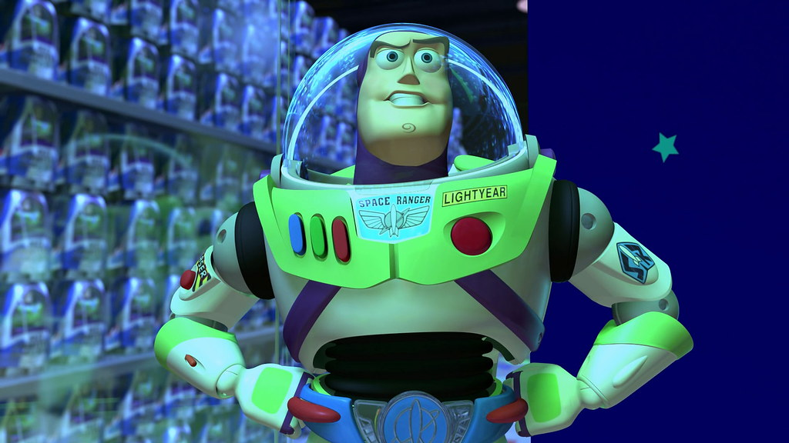
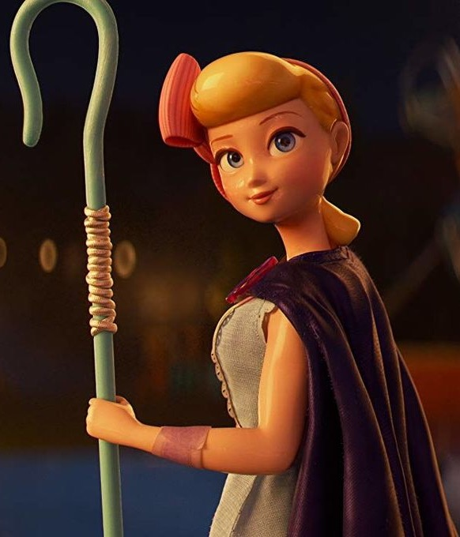
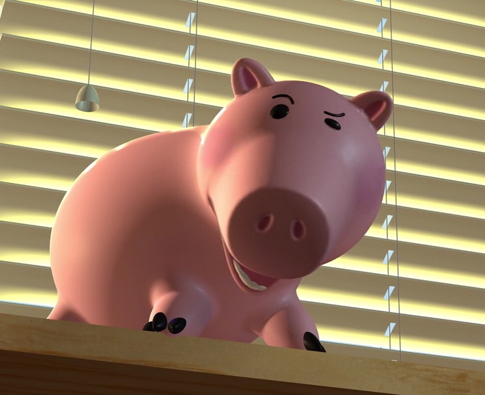
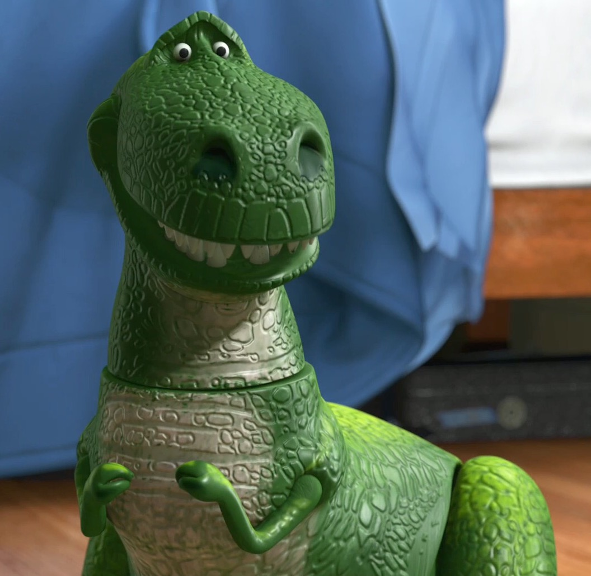
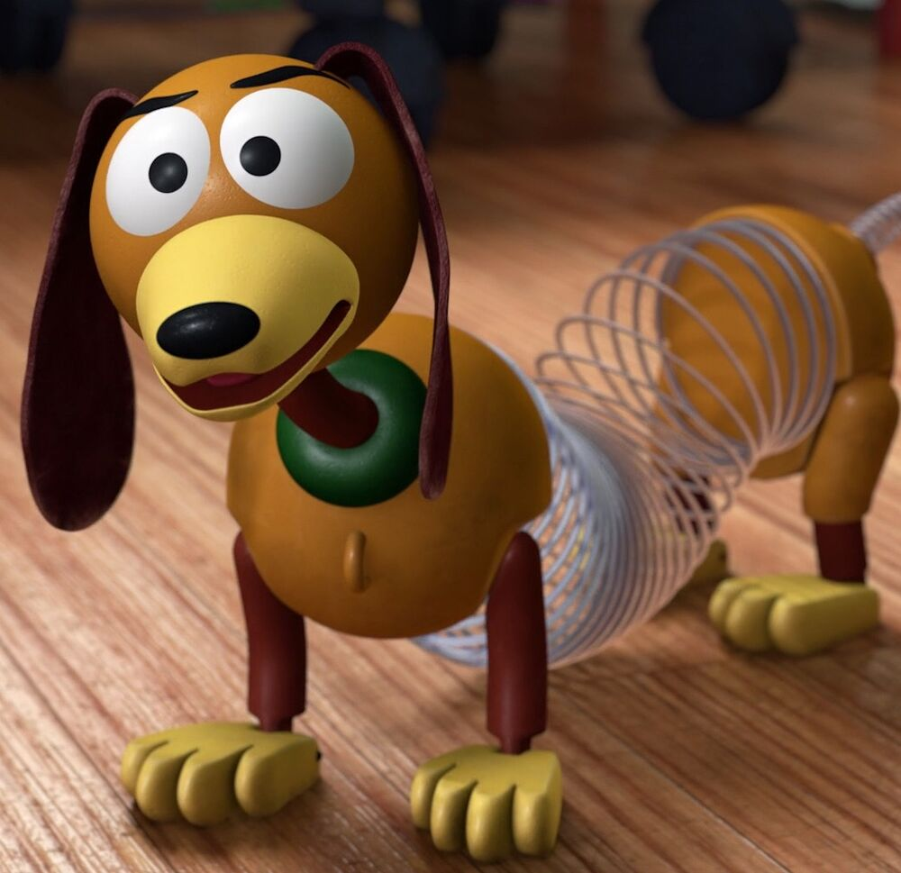
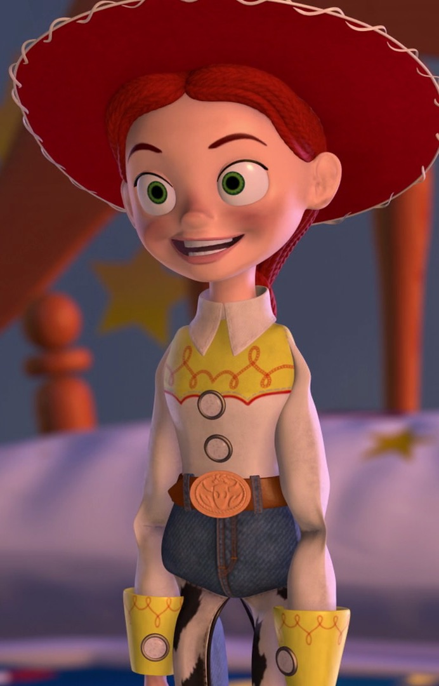

Buzz Lightyear
“To Infinity and Beyond!” Buzz, like many characters in Toy Story, is a complicated one, who feels genuine emotions such as pride, anger, depression, and sadness, much like a regular human. These are traits which he shares with his best friend, Woody, however, one would say that Buzz is better at keeping his emotions in check than the cowboy. Buzz is known for his bravery and courage with a by the book mindset, believing the way people should live their life by the following rules; though there are rare moments when he will bend the rules or tell a cover story if needed to when he knows it is the right thing to do. Though possessing great leadership qualities, one of Buzz's biggest character flaws at times is that he can rather unemotional.

Bo Peep
Bo is the romantic interest (later girlfriend) of Woody, providing a calm and loving comfort whenever he is overwhelmed. She is noted for using her shepherdess crook to hook her cowboy and bring him closer in a romantic way. In private, she is a great deal more daring with her words and actions, which Woody seems to be quite fond of.

Hamm
Hamm is a wisecracking piggy bank. He and Mr. Potato Head appear to be best friends, as they are often seen playing games and high-fiving each other whenever something spectacular happens. Hamm is somewhat of a technological genius. He can identify types of trash bags, child locks, and is the ultimate channel-hopper in Toy Story 2, as he switches channels far more rapidly than the other toys can.

Rex
Rex suffers from anxiety. He fears being replaced or abandoned, either at the prospect of being thrown away or the arrival of a newer, more ferocious dinosaur toy. Despite his fears, he finds happiness and enjoyment in most things; one of his favorite pastimes include playing video games with his friends, a hobby in which Rex has shown a fair amount of talent. With his childlike demeanor and lack of self-confidence, Rex is the most innocent of all the toys and shows the greatest desire to be loved and played with.

Slinky Dog
Slinky is a nice, friendly, and playful dog. He is quite well-behaved compared with some of Andy's other toys. He shows faith in Woody (sometimes acting like his pet), and he'll do anything to help his friend out. He is friends with all of Andy's toys, has a sense of humor, and enjoys playing checkers with Woody.

Jessie the Yodeling Cowgirl
Jessie is a friendly, excitable cowgirl doll. She likes being loved by any child and has the power to yodel. She hates being in storage ― as it makes her claustrophobic ― and not having someone to love her. A girl named Emily had once loved her until she gave her up and put her in a charity box, which emotionally scarred Jessie forever.